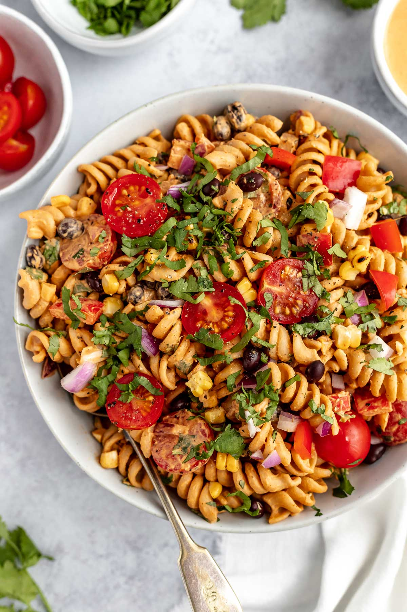

Cold Pasta Salad

Description
Tasty salad filled with plenty of veggies, with a simple dressing that adds
a burst of flavor. Use your favorite type of pasta to make this dish your own!
The salad can be prepared in about 20 minutes, including chopping time. I just
use one big bowl, and mix everything into the cooled pasta. This recipe serves 8,
but can easily be adjusted for even larger portions.
Ingredients
- 1 pound of pasta
- 1/2 red onion (but more is good too)
- 1/2 cup cherry tomatoes, halved or quartered
- 1 small green or red bell pepper
- 1 can sliced black olives
- 1/4 cup chopped fresh parsley
- Salt and Pepper to taste
- 2 Tbs white balsamic vinegar
- 1/2 tsp oregano
- 1 tsp garlic powder
- 1 tsp onion powder
- 1/4 tsp crushed red pepper
- Good pinch of sugar
Steps
- Cook Pasta according to directions to your desired doneness.
Drain and let cool. If serving the pasta cold, run the cooked pasta
under cold water to cool it off quite a bit.
- While the pasta cooks, chop the veggies, and make the dressing.
- Make the dressing by combining the olive oil, vinegar, spices, and sugar.
Whisk it until fully combined and set aside.
- In a large bowl, combine the pasta, chopped veggies, parsley, and dressing.
Toss until the pasta and veggies are fully coated in the dressing.
- Salt and pepper to taste and ENJOY!!
Storing
The pasta will keep in the fridge for at least 4-5 days after preparation.
Try using an air-tight container. If you're planning on doing this as a meal
prep recipe, you can even keep the dressing separte and pour it on right before serving.
If you keep it all in one container, make sure to mix it all up before serving. The dressing
tends to settle to the bottom.